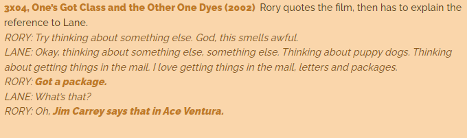

Plot
Ace Ventura (Jim Carrey) is een detective voor gemiste huisdieren en ze onderzoeken hier een zaak met een gemiste dolfijn (Snowflake). Monica komt er ook in voor en hij heeft de baas gekust die eigenlijk een man was.Mijn mening
Gilmore Girls references
